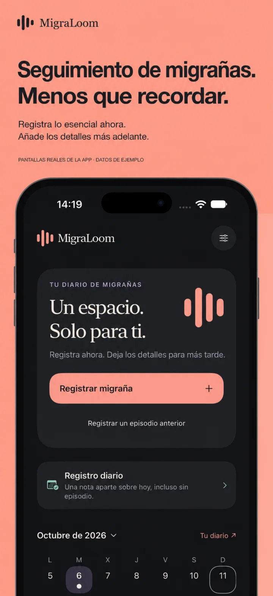
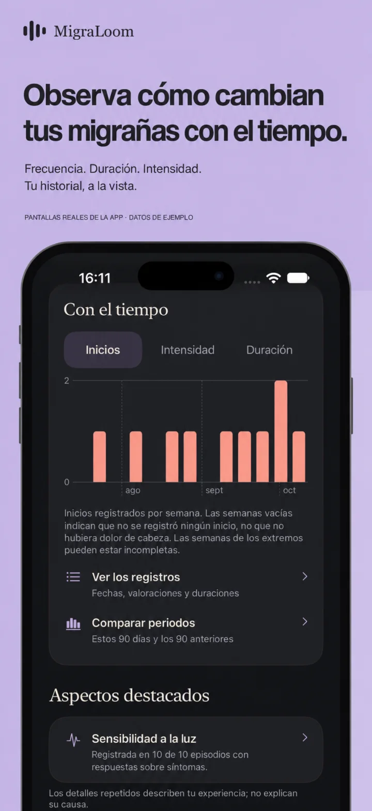
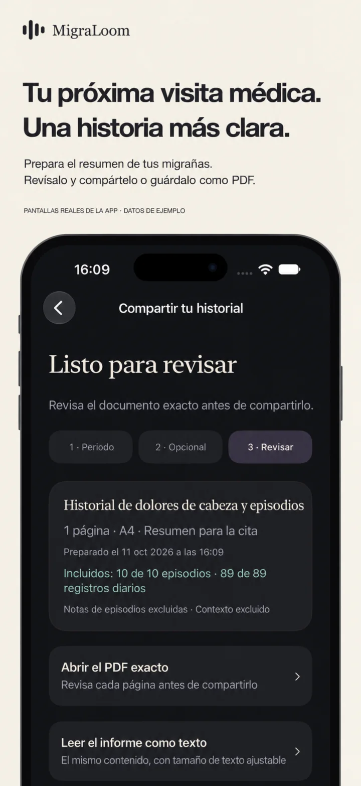

Registro rápido
Anota dolor, duración, síntomas y medicación.
 MigraLoom
MigraLoomSalud y claridad
Registra episodios, síntomas y posibles desencadenantes para comprender mejor tus patrones y preparar tus consultas.
Descargar en el App StoreDiseñada para iPhone · Por Kestora Labs


Hecha para una función clara
Anota dolor, duración, síntomas y medicación.
Observa tendencias sin convertir el seguimiento en una carga.
Lleva información ordenada a tu próxima consulta.
En tu día a día
Anota dolor, duración, síntomas y medicación. Observa tendencias sin convertir el seguimiento en una carga.

MigraLoom no es un dispositivo médico y no ofrece diagnóstico ni consejo médico. Busca atención profesional cuando la necesites.